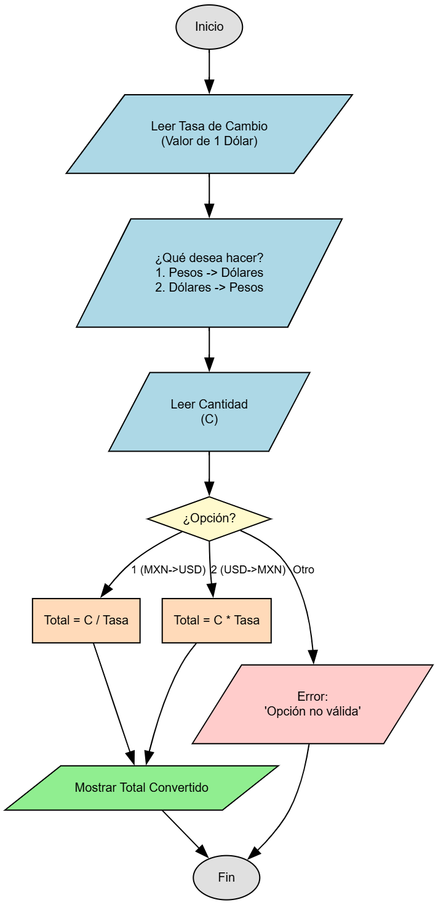

📝 Descripción del Problema
Se desea convertir una cantidad expresada en dólares a su equivalente en pesos mexicanos. Para ello, el programa debe leer la cantidad ingresada por el usuario y multiplicarla por el tipo de cambio actual. El resultado final será el monto equivalente en pesos.
Dato: CAN (variable real que representa una cantidad en dólares).
💡 Pistas y Fórmulas Clave
- El cálculo principal consiste en multiplicar la cantidad en dólares por el tipo de cambio.
- Fórmula:
PESOS = CAN * TIPO_CAMBIO - Usa el tipo de cambio establecido: 1 dólar = 11.96 pesos.
- Para mayor claridad, define el tipo de cambio en una constante:
final double TIPO_CAMBIO = 11.96; - Recuerda validar que la cantidad ingresada (
CAN) sea mayor o igual a 0. - El resultado debe imprimirse claramente como cantidad final en pesos.
📊 Diagrama de Flujo
Aquí va la imagen del diagrama de flujo.';">